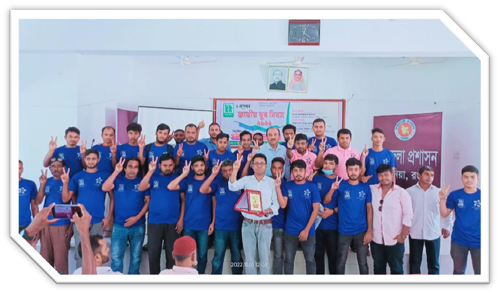
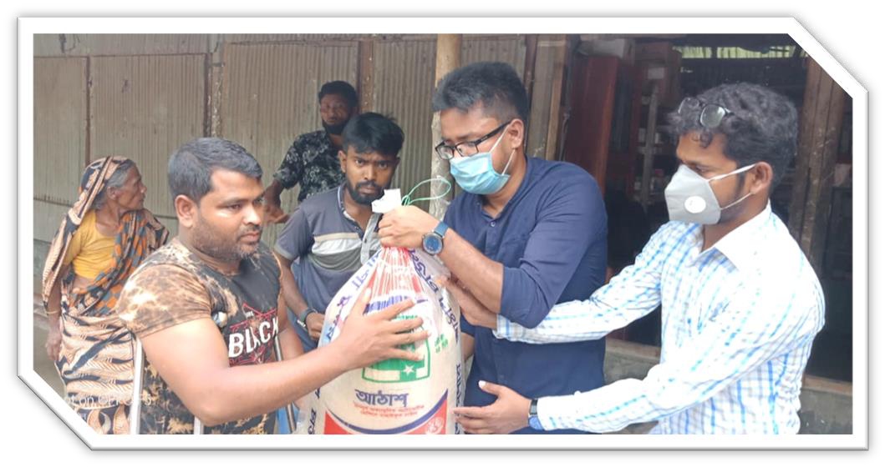

Youth-led change for a
resilient Bangladesh
KYSDO is a non-profit, voluntary and non-political development organization working in education, health, climate action, livelihoods and humanitarian response with the communities of Kaunia, Rangpur.

A participatory, rights-based approach
KYSDO works to empower youth, women, children, older persons, persons with disabilities and marginalized communities — with the goal of building a just, inclusive, environmentally sustainable and resilient society, aligned with national development priorities and the SDGs.
A just, inclusive, climate-resilient and prosperous Bangladesh where every individual enjoys equal access to quality education, healthcare, security, dignity and sustainable livelihoods.
To empower individuals and communities by strengthening youth leadership, quality education, health and well-being, climate resilience, skills, women's empowerment and sustainable livelihoods.
Seven programmes, one community
Climate Action & Environmental Sustainability
Climate awareness seminars, World Environment Day tree plantation, conservation drives and youth-led climate action.
Youth Leadership & Community Engagement
Leadership training, national day observance, sports and cultural programmes, volunteer mobilization.
Education Support & Literacy Promotion
Education grants, recognition of meritorious students, school bags and winter clothing for learners at risk of dropping out.
Community Health, Nutrition & WASH
Free eye care, maternal and child nutrition, courtyard meetings on family planning and reproductive health.
Sustainable Livelihoods & Food Security
Safe agricultural input distribution for livelihood development and local employment generation.
Humanitarian Assistance & Emergency Response
COVID-19 response, emergency food and cash assistance, winter clothing for older persons, disaster response.
Volunteerism & Community Service
Voluntary blood donation for critically ill patients, volunteer engagement and community awareness campaigns.

Reported outcomes from our project records
Messages from our leadership
“The true strength of an organization lies not only in the programmes it implements but also in the values it upholds — integrity, accountability, and unwavering commitment to the people it serves.”
“Meaningful and lasting change begins at the community level — through inclusive participation, strong local leadership, and collective action.”
Latest from the field
Youth climate seminar draws 80+ participants in Kaunia
Held at the Upazila Nirbahi Office hall with government offices, teachers and civil society.
World Environment Day tree plantation campaign
Fruit, timber and medicinal saplings planted with students and youth volunteers.
Voluntary blood donation for critically ill patients
A standing volunteer roster connects donors with families in urgent need.
Volunteer
Join the volunteer roster for climate, education, health and emergency response activities in Kaunia.
Sign up formDonate
Support education grants, winter clothing and emergency relief. Every contribution is audited and reported.
Give nowPartner with us
We work with government bodies, NGOs, academic institutions and community organizations. Download our profile.
Organizational profile (PDF)